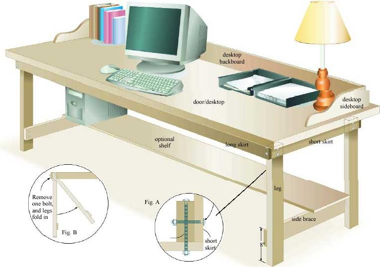

Build Mother's Easy, Low-Cost Big Desk
Anyone can make this sturdy work space using basic tools and an ordinary door.
Story by Steve Maxwell. Illustrations by Len Churchill.
June/July 2005
You’d be surprised how easy it is to build this simple desk. For about $75 (even less if you use recycled materials), you get more than 15 square feet of desktop space plus an optional shelf underneath for computer equipment or extra books. And building a desk like this won’t take more than a weekend, even if you don’t have much carpentry experience.
There are three keys to building any kind of simple, inexpensive furniture, and this desk incorporates them all: a design that uses standard lumber sizes; joinery details that are easy to build, yet strong; and a finishing strategy that’s fast, fume-free and durable.
Start With the Top
Most lengths for the desk parts on the materials list are related to the size of the desktop you choose, and that’s why your first step is to acquire a hollow-core interior door. These inexpensive doors are large, flat, rigid and lightweight - perfect for use as a desktop. Our plan assumes a standard size of 80 by 32 inches.
If you want to use a different-sized desktop, follow these simple guidelines for adjusting the other parts’ lengths:
• Long skirts: 6 inches shorter than the desktop’s length
• Short skirts: 5 ½ inches shorter than the desktop’s width
• Side braces: same length as short skirts
• Desktop backboard: 3½ inches shorter than desktop’s length
• Desktop sideboards: 12 inches shorter than desktop’s width
Most interior doors are reasonably smooth, but the finished desktop will look better if you spend a little time sanding it anyway. This is especially true around the corners and edges. A few quarter sheets of 120-grit sandpaper folded into thirds work best for sanding by hand. The same kind of sandpaper in a palm sander speeds up the process and yields better results.
Assembling the Side Frames
Next, assemble the two frames that form the leg structure of the desk. Each one is made of two legs, one side brace and one short skirt assembled into four-sided frames with square corners. The plan shows how the top edges of the side braces are 8 inches above the bottom ends of the legs. Cut the parts you need and then sand them all before continuing. It’s amazing how much nicer the finished desk will look if you perform this extra step.
There are two tricks for putting together the side frames well. If the corners of your desktop are square (and they almost certainly will be), use the underside as an assembly guide. By lining up one leg and a short skirt with adjoining edges of the door, your side frames will turn out square, too. As a final check of squareness, measure the distance across diagonally opposite corners of these frames. If the distances are the same (within about one-eighth inch), then your side frames are sufficiently square. Use carpenters glue on all joints, then attach them with 1½-inch finishing nails (two per joint) before carefully setting the two side frames aside to dry. Let the glue dry overnight, then reinforce the joints by installing two No. 8 screws in each brace-to-leg joint and two 3-inch carriage bolts, washers and nuts in each short skirt-to-leg joint.
Almost Done
Your project doesn’t look much like a desk right now, but you’re almost there. Get some help to stand the two side frames upright, then temporarily nail on the two long skirts reusing two 1½-inch finishing nails hammered most of the way into the board where a pair of 6-inch carriage bolts will go later. Select bolt positions that won’t interfere with bolts you’ve already installed.
This assembly won’t be very strong yet, but it does allow the entire frame to stand while you adjust the legs so they’re plumb, and while you level the long skirts. When you’ve got everything right, remove one nail from a single corner joint, drill a bolt hole right through and then install a carriage bolt. Repeat the process until all four corners have four bolts each.
The desktop needn’t be rigidly fastened to the support frame. Simply put it in position with equal desktop overhang, then crawl underneath the table with a pencil and mark where the inside edges of the long and short skirts meet the underside of the desktop. Lift the desktop off, flip it over and screw strips of scrap wood to the bottom surface, aligned inside the pencil marks. These form cleats that prevent the desktop from sliding on its support frame when it’s back in place.
Desk enhancements
One of the beautiful things about this desk is how easily it can be folded flat and stored. Just lift the desktop off the skirt and remove one bolt from the long skirt side on each corner where the leg and skirt connect. This allows the remaining bolt to serve as a pivot point to fold the legs inward.
If you want, you can enhance the desk by adding a desktop backboard and sideboards. This three-sided frame helps to contain paperwork, stray pencils and books, but there’s a trade-off: A top frame limits the usefulness of the desk as a table.
If you opt for a desktop frame, begin by cutting the back and side pieces to length. Use Fig. C as a pattern to mark the curves on the sideboards. Follow the outline with a hand-held jigsaw or coping saw, then sand smooth.
Join the desktop’s backboard and sides together from underneath the desktop, using No. 8 wood screws, and glue the U-shaped frame to your desktop, using large clamps to hold the desktop and frame together. Scrape away any half-hard glue that squeezed out using the square corner of a metal ruler, putty knife or slot screwdriver.
An optional bottom shelf boosts the usefulness of the desk, and adding one is simple. Any three-fourths-inch plywood or solid lumber that extends from one side brace to the other will do just fine. But with a span of more than 6 feet, you’ll have to do something to keep the shelf from sagging under its load. Adding a 3-inch-wide skirt along the back and front edges of the shelf will further stiffen it.
Interior low-VOC (volatile organic compound) latex paint does a terrific job on this desk - it’s low-odor and fast- drying. You’ll get best results if you lightly sand the surface with 180-grit sandpaper after the first coat has completely dried.
And there you have it: a solid, spacious desk. Many variations of this project are possible, so don’t be afraid to try out your own ideas on this do-it-yourself desk.
Materials List
- One hollow-core door, 80" x 32" x 1 1/4"
- Four legs, 28" x 3 1/2" x 1 1/2"
- Two long skirts, 74" x 3 1/2" x 1 1/2"
- Two short skirts, 26 1/2" x 3 1/2" x 1 1/2"
- Two side braces, 26 1/2" x 3 1/2" x 3/4"
- One desktop backboard, 76 1/2" x 5 1/2" x 3/4"
- Two desktop sideboards, 20" x 5 1/2" x 3/4"
- Eight carriage bolts/flat washers/nuts, 3/8" x 3"
- Eight carriage bolts/flat washers/nuts, 3/8" x 6"
- Eight finishing nails, 1 1/2"
- 10 No. 8 flathead wood screws, 1 1/2"
The pattern for the curved sideboards: Draw a grid of 1-inch squares then use the reference lines to plot the shape of the curve. You also can enlarge this pattern on a copier until it is actual size, and then cut out the curve and mark it onto the sideboards.
 The pattern for the curved sideboards: Draw a grid of 1-inch squares then use the reference lines to plot the shape of the curve. You also can enlarge this pattern on a copier until it is actual size, and then cut out the curve and mark it onto the sideboards. |
 |
|